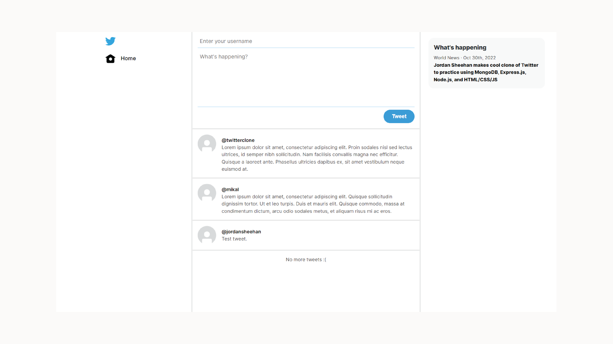

FULL STACK PROJECT
Twitter Clone
This is a personal project I created to imitate some of the functions of the social
media platform, Twitter. A user can input their username and a tweet body and post
it to the main feed. Any user visiting the site is then able to view these tweets
that others have posted.
The primary purpose of this project was to practice using some components of the MERN stack to create a backend for a website. Specifically, the backend for this site is created with Express, Node, and MongoDB. Functionality created with Express runs on top of Node and handles requests from the frontend and responds with information like tweets and usernames. All tweets submitted from the frontend are stored and retrieved in a MongoDB database by utilizing Mongoose. The frontend was then written in HTML, CSS, and JavaScript to submit and display tweets to users.
The primary purpose of this project was to practice using some components of the MERN stack to create a backend for a website. Specifically, the backend for this site is created with Express, Node, and MongoDB. Functionality created with Express runs on top of Node and handles requests from the frontend and responds with information like tweets and usernames. All tweets submitted from the frontend are stored and retrieved in a MongoDB database by utilizing Mongoose. The frontend was then written in HTML, CSS, and JavaScript to submit and display tweets to users.
